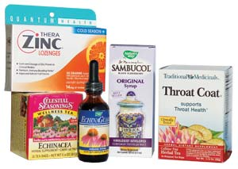
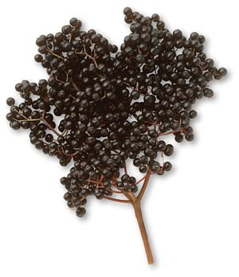

Natural, Effective Remedies For Colds And Flu
Learn about the best herbs, vitamins and simple strategies to stave off winter illnesses this cold and flu season.
By Linda B. White, M.D.
December 2007/January 2008
Few people make it through the winter without a scratchy throat and an annoying runny nose. You can’t very well hold your breath all winter, but you can put your immune system in top-notch form to fight colds and flu by employing a variety of natural methods for hastening recovery and easing symptoms, such as herbal remedies, water therapy and supplements.
Common Causes
The reasons many of us get winter colds and flu are numerous: One, we’re indoors with other people while windows and doors are closed. Two, viruses causing most respiratory infections are always mutating, and our immune systems have trouble handling these ever-changing germs. Three, viruses can survive on non-porous surfaces for hours. If you turn a door handle recently touched by a sneezing, sniffling person, then lift a hand to your nose, you’ve infected yourself. Four, some respiratory viruses, notably influenza, become airborne when someone coughs. You only need to inhale three tiny viruses to become sick.
Several families of viruses cause colds. This viral mafia produces runny nose, sneezing, sore throat and cough. Though symptoms are usually mild and gone within a week, colds produce rampant absenteeism from work and school.
Influenza is not as common as colds, and vaccines can help prevent the infection. Two main types of influenza viruses - A and B - cause most cases of the flu. Influenza viruses spread in the air and via direct contact. Flu symptoms are usually dramatic, with sudden onset of chills, fever and muscle aches. Nasal congestion is not as marked, but the cough can take weeks or even months to resolve.
Take the Waters
When you come down with a cold or the flu, your respiratory tract works hard to expel the invading viruses along a veritable “Slip ’n Slide” of mucus. Rather than drying those mucus secretions with an over-the-counter antihistamine, it’s better to accelerate the healing process by thinning them, thus making it easier to expel them.
The best way to thin mucus secretions is to add water to your system by drinking warm liquids, especially herbal teas and soup broth. If you have access to a steam shower, use it. If not, bring a quart-size pot of water to a boil, remove it from the stove and place your face a comfortable distance from the steam, then cover your head with a towel. Inhale through your nose if you’re stuffy, or through your mouth for chest congestion.
You can augment the power of steam by adding a handful of decongesting, antimicrobial herbs to the boiled water, then covering the pot and allowing them to steep for 10 to 15 minutes. Herbalist Mindy Green, co-author of Aromatherapy: A Complete Guide to the Healing Art, recommends using eucalyptus, thyme, rosemary or peppermint leaves.
Alternatively, you can add three drops of either eucalyptus or rosemary essential oil to the just boiled water. If you use peppermint, add only one to two drops. Don’t use essential oils of thyme and oregano for steam inhalation - they’re too irritating. Close your eyes when inhaling essential oils. Caution: Aromatic vapors may aggravate asthma. Also, don’t take these concentrated plant essences by mouth, and keep the bottles out of children’s reach.
A warm bath can relax aching muscles and combat chills. You can either strain the herbs from your steam inhalation pot into a bath, or add five to eight drops of plant essential oils (only three drops for peppermint) to the tub. For muscle aches, try juniper, marjoram and ginger. Disperse the oils well before climbing in. For children 5 to 12 years old, add only one to two drops of essential oil diluted in vegetable oil. Green advises against the use of essential oils for small children or pregnant women.
Vitamins and Minerals
What about supplements? For years, the word on the street was that increasing vitamin C intake would protect you from colds. Vitamin C does indeed promote a healthy immune system, as do vitamin A, carotenes, zinc and selenium. The research on supplementing with these vitamins, however, hasn’t always yielded glowing results.
A 2004 review of vitamin C research concluded that the cumulative scientific data doesn’t justify mega-dosing vitamin C to prevent or treat the common cold. Even hefty doses (4 grams) at the onset of a cold didn’t seem to alter the course appreciably. A subgroup of people though - those undergoing brief periods of intense physical exertion or exposure to cold - did seem to catch fewer colds while taking vitamin C. Further, some vitamin C users do report a reduced duration and severity of cold symptoms, indicating that it may play some role in respiratory defense mechanisms. Typical daily doses are 200 to 500 milligrams a day. Eating vitamin C-rich foods, such as peppers, guava, citrus fruits, strawberries and leafy greens, is always a great idea.
Now for zinc. In the winter, you can scarcely walk the aisles of your local grocery or drug store without bumping into the bags of zinc lozenges. But the research on zinc supplements is hard to sort.
There have been about a dozen studies on zinc lozenges and nasal gels, with mixed results. Lozenges are supposed to be sucked every two to three hours for the first couple days of a cold. The typical dosage for zinc gluconate lozenges is 9 to 24 milligrams of elemental zinc taken every two hours while awake and symptomatic. Side effects with the lozenges include nausea and weird taste. And there have been reports of people permanently losing their sense of smell after using the nasal gels - a good reason to choose lozenges instead.
In a study conducted at the Ege University Medical School in Turkey, kids received zinc sulphate (15 milligrams of zinc) as a syrup for seven months, with a doubling of the dose at the onset of cold symptoms. Compared to kids who took a placebo syrup, those taking zinc had significantly fewer colds, and the colds they got were shorter and milder.
Herbal Comfort
Many herbs are used to decrease the severity of colds and flu. While research has been mixed, many of them were proven to aid healing.
Echinacea (E. angustifolia, purpurea and pallida) is the best-researched herb for enhancing immune defenses to help prevent respiratory tract infections. Several well designed studies support the use of this herb for the treatment of acute viral upper respiratory infections. Though a controversial 2005 study published in the New England Journal of Medicine concluded that extracts of the E. angustifolia root didn’t significantly affect viral infections, the American Botanical Council noted the dosage used in the study was lower than the amount recommended by the World Health Organization, as well as the Canadian Natural Health Products Directorate. Two more recent meta-analyses concluded that echinacea did reduce the duration and incidence of the common cold.
Two types of preparations have repeatedly been shown effective: the juice of the aboveground parts of E. purpurea (marketed as Echinagard), and the alcoholic extracts (tinctures) of the roots of E. purpurea and E. pallida. According to one study, echinacea tea may also be an effective remedy.
Most experts say that when a good product is taken in adequate and frequent doses at the onset of symptoms, echinacea can shorten the duration and severity of a cold. Based on new research, it may also make sense to start echinacea if you’ve been exposed to someone with a cold. The recommend dosage is two droppers full of echinacea mixed with water - either the root tincture or the juiced aerial parts preserved in alcohol. This should be taken every two waking hours while symptomatic. Renowned herbalist Steven Foster, author of numerous books on medicinal plants, including Echinacea, acknowledges that perfect compliance is tough. His method when he feels a cold coming on? “I slug down 1 teaspoon of tincture at least three times a day.”
Andrographis (Andrographis paniculata) seems to be an up-and-coming cold season herb. A 2004 research review of seven double-blind, controlled studies concluded that andrographis “may be a safe and efficacious treatment for the relief of symptoms of uncomplicated upper respiratory tract infection,” though the authors called for further research. A Russian study in children found that Kan Jang (andrographis leaf extract and eleuthero root, i.e., Siberian ginseng) was more effective than an echinacea extract in reducing the severity and duration of common cold symptoms.
Elderberry. A time-honored European cold and flu remedy is a tea of elder flowers and peppermint leaves. Scientific research however, has focused on the berry from the black elderberry tree (Sambucus nigra). (Red elderberries [S. racemosa] are toxic when taken internally. American elderberries [S. canadensis], which are dark purple, are OK to consume if cooked first.)
An extract of the black elderberries produces beneficial immune actions and helps fight influenza and other respiratory viruses. Two small studies have demonstrated rapid recovery from influenza with a proprietary elderberry extract called Sambucol, which is available in many natural food stores. You also can make your own elderberry syrup. While I can’t guarantee your syrup will contain the same chemical profile of that used in research (Sambucol), it will be tasty medicine. (Black elderberry plants are available from Horizon Herbs, which also carries Richo Cech’s book Making Plant Medicine with instructions on making elderberry syrup. - MOTHER)
Ginseng and Eleuthero. Asian ginseng (Panax ginseng), American ginseng (P. quinquefolius) and eleuthero (aka Siberian ginseng or Eleutherococcus senticosus) all have been reported useful in fighting respiratory viruses. Such immune enhancing herbs may be particularly helpful for the elderly. Ginseng is one of Foster’s stalwart cold and flu remedies. “When I feel like I’m coming down with something, I nibble on the root.” The dose is 1 to 3 grams a day. If the root is not handy, he takes a standardized extract (Ginsana brand).
Licorice root (Glycyrrhiza glabra) has many properties that can relieve cold and flu symptoms. It’s an anti-inflammatory, demulcent (soothing to sore throats), antispasmodic (to relax tight coughs) and expectorant (expels respiratory mucus).
Licorice root is sweet and makes most herbal blends taste great. When I have a respiratory infection, it’s a key ingredient in the teas I brew. One study found that drinking 6 cups a day of a tea containing licorice relieved throat pain. This tea, Throat Coat, also contains slippery elm bark, marshmallow root, wild cherry bark, bitter fennel fruit, cinnamon bark and sweet orange peel.
However, don’t take licorice for more than four to six weeks - it causes your kidneys to retain water and sodium and lose potassium. Don’t take it at all if you’re pregnant, have high blood pressure or low blood potassium, or take a potassium depleting diuretic.
Common Sense for Colds and Flu
The usual lifestyle factors influence immune function, so to avoid getting sick in the first place, eat well and emphasize whole grains, fruits and vegetables in your diet. Also try to sleep at least eight hours a night. Wash your hands often, and sneeze into your arm, not your hand (see Bird Flu: A Virus of Our Own Hatching). Avoid exposure to cigarette smoke, which stalls respiratory defenses, and keep alcohol to a minimum because excessive amounts impair immunity. Exercise regularly and moderately. If you come down with a cold, light exercise is fine and can help clear respiratory mucus. If you have a fever, rest.
Over-the-counter Cold Medications
According to a recent review of studies on children and adults published by the American Academy of Family Physicians, research (and there isn’t much of it) has failed to demonstrate that over-the-counter cold medications do much good; in fact, they can do harm. For instance, first-generation antihistamines (characterized by greater drowsiness) were designed to reduce nasal secretions, but this dehydrating effect makes them harder to expel and more likely to collect in the sinuses and cause infection.
Other over-the-counter products, such as decongestants, shrink swollen respiratory linings, thus relieving stuffiness. But they also cause jitteriness, insomnia and elevated heart rate and blood pressure. Plus, they’ve been linked to heart attacks and strokes. In 2000, the U.S. Food and Drug Administration (FDA) began taking steps to remove the decongestant phenylpropanolamine (PPA) from the market because it increases the risk of hemorrhagic stroke (bleeding into the brain). If you still have any PPA-containing cough and cold remedies in your medicine chest, toss them.
Topical decongestants (nasal sprays) avoid getting as much of the drug into your bloodstream. But restrict use to four days because these products can lead to rebound swelling of the mucous membranes, which makes you want to squirt more of them up the nose, and can cause you to become dependent on the spray.
Cough medications may contain ingredients to both suppress coughing and promote expectoration. However, coughing up infected mucus is a good thing - much better than having it remain in the lungs. For that reason, suppressing a productive cough thwarts your body’s attempt to heal. One recent review of cough medications concluded, “There is no good evidence for or against the effectiveness of over-the-counter medicines in acute cough.” If you do use a cough medicine, choose one without a cough suppressant, unless your cough is keeping you from sleeping.
Linda B. White, M.D., is an assistant professor in the Health Professions Department at Metropolitan State College of Denver, where she teaches students how to use herbs to manage respiratory infections and other ailments.
 RICK WETHERBEE These lovely flowers are echinacea, a popular natural remedy for colds and flu. |
 ISTOCKPHOTO/KUTAY TANIR Research has failed to demonstrate that over-the-counter cold medications do much good; in fact, they can do harm. |
 MATTHEW T. STALLBAUMER Herbs and minerals such as echinacea, elderberry and zinc can help reduce the duration of your cold. |
|
ISTOCKPHOTO/LEAH-ANNE THOMPSON Steam inhalation can reduce nasal stuffiness and chest congestion. The addition of herbs can increase the steam’s healing effects. |
 PLANTSTOCK.COM Of the many types of elderberry, only black elderberry has been studied as a cold remedy. |
|